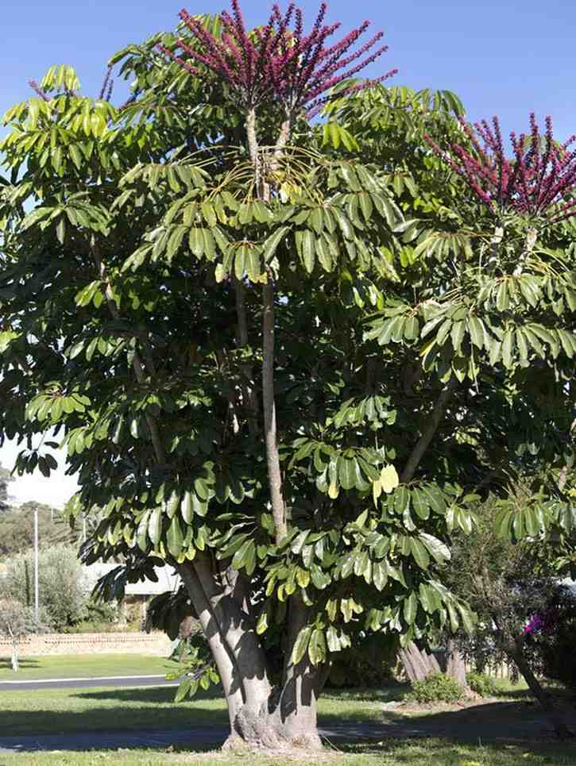
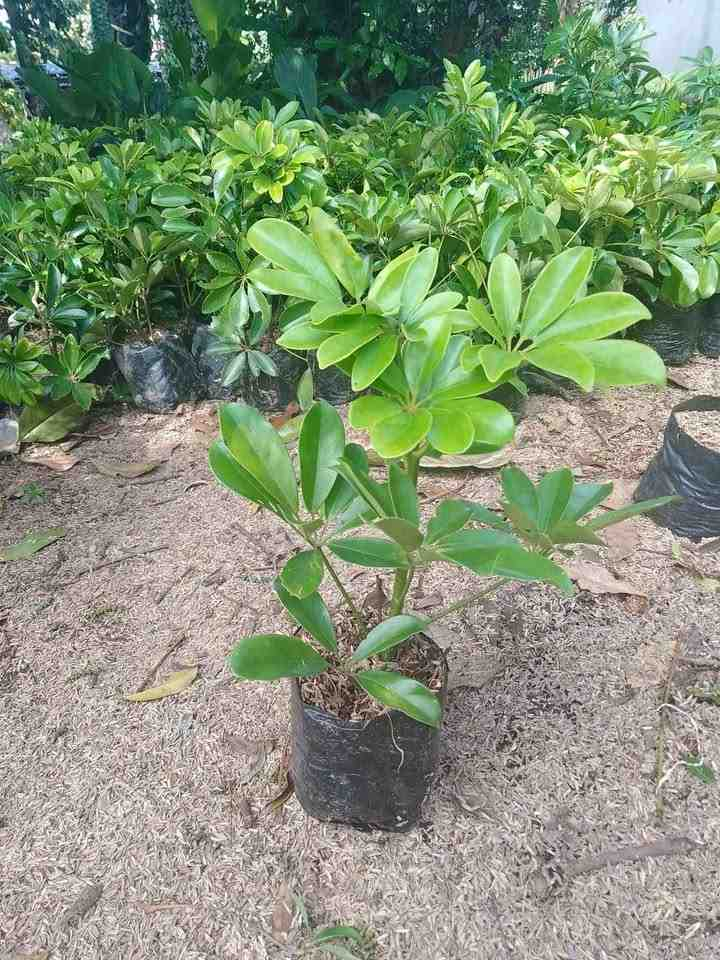
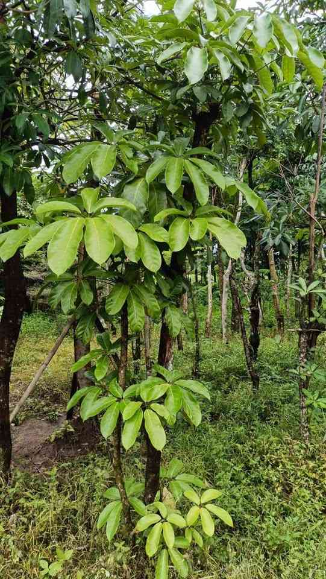
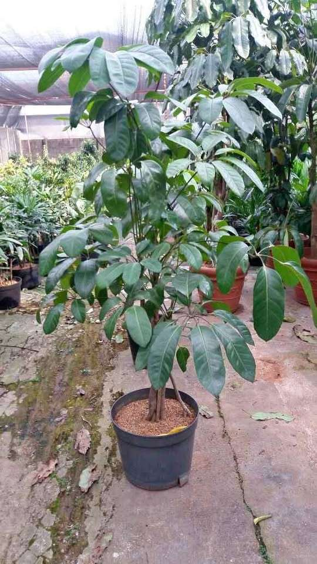
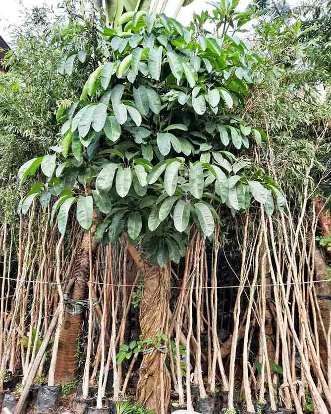
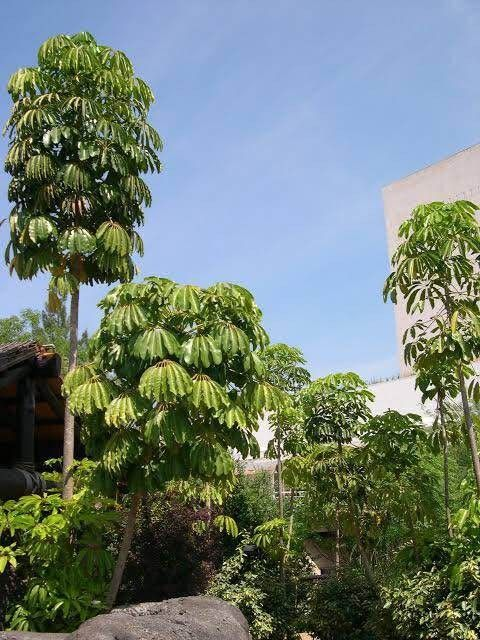
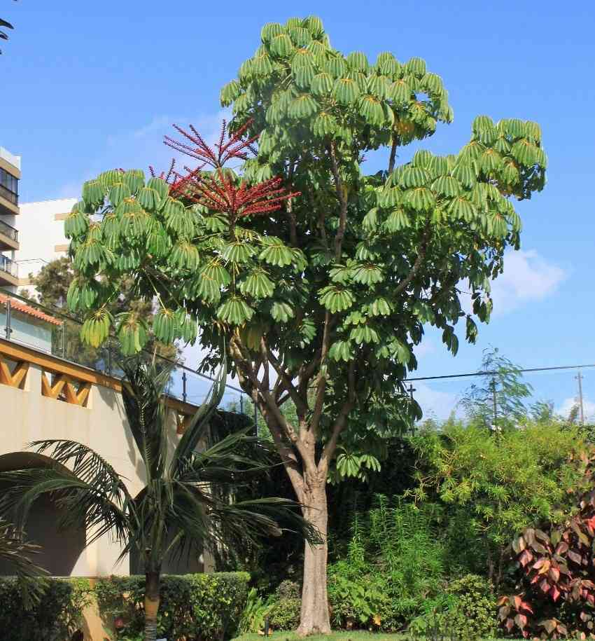
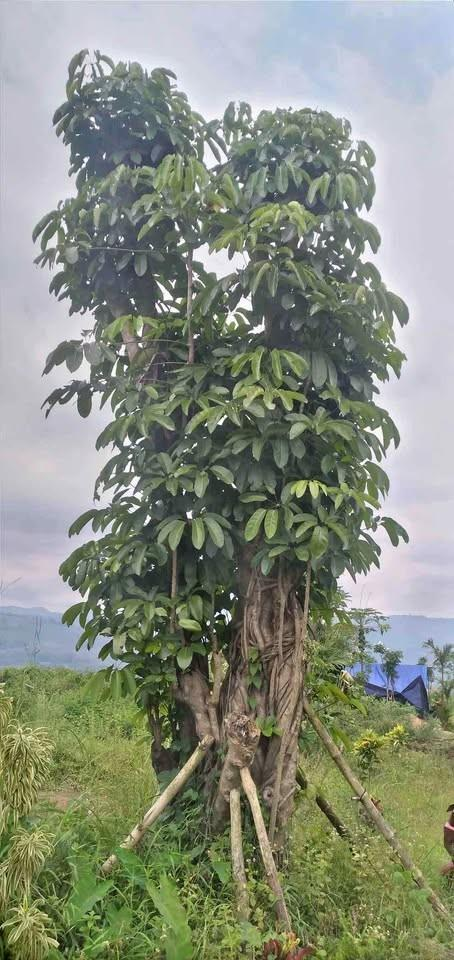
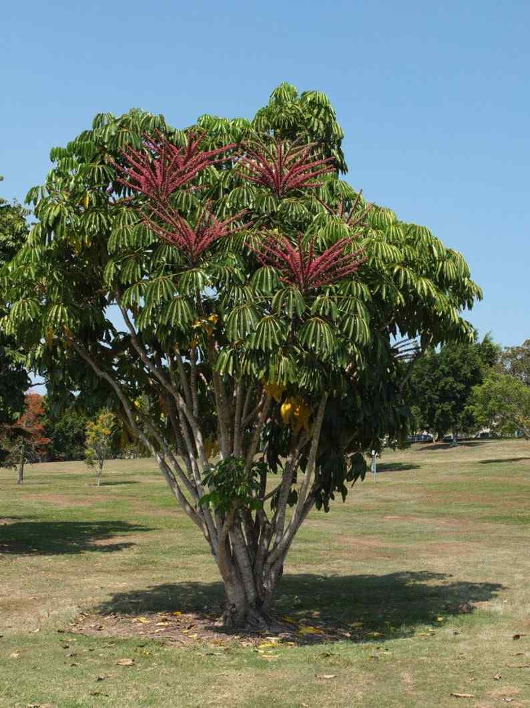

Jual Pohon Walisongo Tinggi Besar Termurah Siap Kirim & Tanam
Jual pohon walisongo hijau berkualitas untuk taman rumah, villa, resort, hotel, area kantor, kawasan komersial, hingga proyek landscape tropis. Pohon walisongo hijau dikenal sebagai tanaman hias daun yang rimbun, segar, dan elegan dengan bentuk daun menjari yang khas. Berbeda dari walisongo variegata, varian walisongo hijau memiliki warna daun hijau solid yang memberi kesan alami, teduh, dan mudah menyatu dengan konsep taman tropis, taman minimalis, taman modern, maupun area outdoor bernuansa natural.
Tamannika melayani jual pohon walisongo dalam berbagai ukuran sesuai ketersediaan stok, mulai dari tanaman walisongo kecil, tanaman walisongo siap tanam, hingga pohon walisongo besar untuk kebutuhan dekorasi taman, penghijauan halaman, taman kantor, villa, resort, dan proyek landscape. Bagi Anda yang sedang mencari harga pohon walisongo hijau terbaru, stok tanaman hias walisongo, atau rekomendasi pohon daun hijau untuk taman, hubungi Tamannika untuk cek stok, ukuran, dan harga terbaru sekaligus konsultasi kebutuhan tanaman walisongo yang sesuai untuk taman rumah maupun proyek Anda.

Daftar Harga Pohon Walisongo Hijau Terbaru 2026
Tersedia pohon walisongo hijau mulai dari bibit kecil, tanaman siap pot, ukuran sedang, hingga pohon walisongo besar.
*Harga dapat berubah menyesuaikan kondisi tajuk, kerapatan daun, dan ketersediaan stok.

Bibit Walisongo Hijau Kecil (±15 – 30 cm)
Rp10.000 – Rp35.000
✔ Pilihan ekonomis untuk pembeli yang ingin menanam walisongo hijau dari ukuran kecil
✔ Ideal untuk pot kecil, area teras, taman mini, dan dekorasi hijau sederhana

Tanaman Walisongo Hijau Siap Pot (±30 – 60 cm)
Rp35.000 – Rp85.000
✔ Daun hijau solid memberi kesan segar, rimbun, dan natural
✔ Cocok untuk dekorasi rumah, cafe, kantor, maupun taman minimalis

Pohon Walisongo Hijau Sedang (±80 – 120 cm)
Rp100.000 – Rp280.000
✔ Tampilan daun lebih rimbun sehingga cepat memberi efek hijau pada area taman
✔ Cocok untuk pot besar, jalur taman, sudut bangunan, dan dekorasi outdoor

Pohon Walisongo Hijau Besar (±1.5 – 2.5 Meter+)
Rp550.000 – Rp2.500.000+
✔ Memberi kesan rimbun, teduh, dan natural sebagai tanaman hias daun hijau ukuran besar
✔ Membutuhkan pengecekan stok, kondisi tajuk, ukuran batang, handling, dan pengiriman khusus
Jual Pohon Walisongo Hijau Berkualitas
Tamannika menyediakan layanan jual pohon walisongo hijau berkualitas untuk kebutuhan taman rumah, villa, resort, hotel, area kantor, kawasan komersial, dekorasi outdoor, hingga proyek landscape tropis. Pohon walisongo hijau dikenal sebagai tanaman hias daun yang rimbun, segar, dan elegan dengan bentuk daun menjari yang khas. Berbeda dari walisongo variegata, varian walisongo hijau memiliki warna daun hijau solid yang memberi kesan natural, teduh, dan mudah menyatu dengan berbagai konsep taman. Dengan pilihan ukuran yang menyesuaikan ketersediaan stok, kondisi tanaman sehat, serta penanganan pengiriman yang aman, kami siap menjadi supplier pohon walisongo untuk taman minimalis, taman tropis, halaman rumah, area komersial, kantor, villa, resort, hingga proyek landscape di Indonesia.
Tampilan Hijau Rimbun & Natural
Pohon walisongo hijau memiliki tampilan daun yang rimbun, segar, dan dekoratif dengan susunan daun menjari yang khas. Tanaman hias walisongo ini cocok digunakan sebagai elemen penghijauan taman, aksen halaman rumah, tanaman hias outdoor, dekorasi area kantor, maupun pelengkap taman tropis, taman minimalis, taman modern, dan proyek landscape bernuansa natural.
Harga Pohon Walisongo Hijau Variatif
Kami menyediakan pilihan pohon walisongo hijau dalam berbagai ukuran sesuai stok, mulai dari bibit walisongo, tanaman walisongo siap pot, hingga pohon walisongo besar untuk kebutuhan taman rumah dan proyek landscape. Harga pohon walisongo menyesuaikan tinggi tanaman, kerapatan daun, bentuk tajuk, kondisi akar, media tanam, ukuran batang, serta kebutuhan pembelian untuk dekorasi taman pribadi, area komersial, maupun pengadaan tanaman landscape.
Pengiriman Aman & Tanaman Siap Tanam
Setiap pohon walisongo hijau dikirim dengan penanganan profesional agar kondisi akar, batang, daun, media tanam, dan kelembapan tanaman tetap terjaga. Tanaman dapat disiapkan untuk kebutuhan penanaman di taman rumah, halaman kantor, villa, resort, hotel, area outdoor, kawasan komersial, maupun proyek landscape yang membutuhkan tanaman hias daun hijau siap tanam.
Cocok untuk Taman Rumah & Landscape Tropis
Pohon walisongo hijau cocok digunakan untuk taman rumah, taman minimalis, taman tropis, halaman villa, resort, hotel, kantor, cafe, area komersial, dan proyek landscape. Karakter daunnya yang hijau solid dan rimbun membuat tanaman walisongo ideal sebagai tanaman hias outdoor, tanaman pot besar, aksen sudut taman, pembatas alami, maupun pohon daun hijau untuk menciptakan suasana taman yang lebih segar, teduh, dan natural.


Pohon Walisongo Hijau dari Tamannika
Pohon walisongo hijau merupakan salah satu tanaman hias daun yang banyak dicari untuk kebutuhan taman rumah, villa, resort, hotel, area kantor, kawasan komersial, hingga proyek landscape karena memiliki tampilan daun yang rimbun, segar, dan dekoratif. Tanaman walisongo hijau dikenal dengan bentuk daun menjari yang khas serta warna hijau solid yang memberi kesan natural, teduh, dan mudah menyatu dengan berbagai konsep taman. Berbeda dari walisongo variegata, pohon walisongo hijau lebih menonjolkan karakter hijau alami yang cocok untuk taman tropis, taman minimalis, taman modern, area outdoor, maupun dekorasi sudut bangunan. Selain tampil rapi dan elegan, tanaman hias walisongo juga banyak dipilih sebagai pohon daun hijau untuk mempercantik halaman, area komersial, kantor, villa, resort, dan kebutuhan landscape skala kecil hingga besar.
- Daun Hijau Rimbun & Tampilan Natural – Pohon walisongo hijau memiliki susunan daun menjari yang khas dengan warna hijau solid, sehingga taman terlihat lebih segar, teduh, natural, dan dekoratif.
- Cocok untuk Taman Rumah & Area Outdoor – Ideal digunakan untuk taman rumah, taman minimalis, taman tropis, halaman kantor, area komersial, cafe, villa, resort, hingga sudut landscape yang membutuhkan tanaman hijau rimbun.
- Bagus untuk Tanaman Hias Daun dan Landscape – Tanaman walisongo hijau banyak diminati sebagai tanaman hias outdoor, tanaman pot besar, aksen taman, pembatas alami, serta elemen penghijauan untuk menciptakan suasana taman yang lebih hidup.
- Tersedia Berbagai Ukuran Siap Tanam – Kami menyediakan pohon walisongo hijau mulai dari bibit kecil, tanaman walisongo siap pot, ukuran sedang, hingga pohon walisongo besar sesuai kebutuhan taman pribadi, area komersial, maupun proyek landscape.
Foto Pohon Walisongo


Karakteristik & Varian Ukuran Pohon Walisongo Hijau
Pohon walisongo hijau merupakan tanaman hias daun yang banyak diminati untuk taman rumah, villa, resort, hotel, area kantor, kawasan komersial, hingga proyek landscape tropis. Tanaman walisongo hijau dikenal memiliki bentuk daun menjari yang khas, tampilan rimbun, serta warna hijau solid yang memberi kesan segar, teduh, dan natural. Berbeda dari walisongo variegata, varian walisongo hijau lebih menonjolkan karakter daun hijau alami yang mudah menyatu dengan konsep taman minimalis, taman tropis, taman modern, area outdoor, maupun dekorasi sudut bangunan. Dengan tampilannya yang rapi dan dekoratif, pohon walisongo cocok dijadikan tanaman hias outdoor, tanaman pot besar, aksen taman rumah, pembatas alami, hingga elemen penghijauan untuk kebutuhan landscape.
Berikut pilihan ukuran pohon walisongo hijau yang tersedia di Tamannika:

Bibit Kecil (±15 – 30 cm)
Cocok untuk pembibitan, koleksi tanaman hias daun, pot kecil, dekorasi teras, dan perawatan bertahap di rumah. Ukuran ini ideal bagi Anda yang mencari bibit walisongo hijau atau tanaman walisongo kecil dengan harga lebih ekonomis untuk kebutuhan penghijauan awal, taman mini, maupun dekorasi rumah bernuansa natural.
Ukuran Sedang (±40 – 80 cm)
Pilihan favorit untuk taman rumah, halaman depan, area teras, pot hias, taman kecil, dan dekorasi indoor terang. Pada ukuran ini, daun walisongo hijau mulai terlihat lebih rimbun sehingga cocok digunakan sebagai aksen hijau untuk taman minimalis, taman tropis, area kantor, cafe, maupun sudut ruangan yang membutuhkan tanaman hias daun segar.
Tanaman Siap Pot (±80 cm – 1.2 Meter)
Cocok untuk pembeli yang ingin tanaman walisongo hijau siap display dengan tampilan lebih terbentuk. Tanaman walisongo siap pot banyak dipilih untuk taman rumah, villa, resort, kantor, cafe, area komersial, dan sudut taman yang membutuhkan tanaman hijau rimbun tanpa harus menunggu pertumbuhan dari bibit kecil.
Ukuran Besar (±1.5 – 2.5 Meter+)
Pilihan terbaik untuk taman rumah besar, villa, resort, hotel, area kantor, kawasan komersial, dan proyek landscape. Pohon walisongo hijau ukuran besar cocok dijadikan tanaman hias utama, aksen sudut taman, pembatas alami, maupun elemen penghijauan karena tampilannya lebih rimbun, matang, dan langsung memberi kesan segar pada konsep taman tropis, taman modern, maupun landscape natural.
FAQ – Pertanyaan Seputar Jual Pohon Walisongo Hijau
Jual Pohon Walisongo Hijau Siap Tanam untuk Taman Rumah, Kantor, dan Proyek Landscape
Tamannika melayani jual pohon walisongo hijau berkualitas untuk kebutuhan taman rumah, kantor, villa, resort, hotel, area komersial, hingga proyek landscape. Pohon walisongo hijau dikenal sebagai tanaman hias daun yang memiliki tampilan rimbun, segar, dan natural dengan warna daun hijau solid. Karakter daunnya yang menjari membuat tanaman ini mudah dikenali dan cocok digunakan untuk mempercantik berbagai konsep taman, mulai dari taman tropis, taman minimalis, taman modern, hingga area outdoor bernuansa alami.
Produk yang kami sediakan berfokus pada walisongo hijau, bukan walisongo variegata. Jika walisongo variegata memiliki corak daun belang atau kombinasi warna, maka pohon walisongo hijau tampil lebih natural dengan warna hijau menyeluruh. Karena itu, tanaman ini sangat cocok untuk Anda yang ingin menghadirkan kesan taman yang lebih teduh, rapi, segar, dan menyatu dengan lingkungan sekitar. Hubungi Tamannika untuk cek stok, ukuran, harga pohon walisongo hijau terbaru, serta konsultasi kebutuhan tanaman untuk taman rumah maupun proyek landscape Anda.
Kenapa Memilih Pohon Walisongo Hijau untuk Taman dan Area Bangunan
Pohon walisongo hijau menjadi salah satu pilihan tanaman hias daun yang banyak digunakan karena tampilannya mudah masuk ke berbagai gaya taman. Daunnya yang hijau solid memberi kesan alami tanpa terlihat terlalu ramai, sehingga cocok untuk area rumah pribadi maupun bangunan komersial.
Tanaman walisongo hijau juga fleksibel dalam penempatan. Ukuran kecil hingga sedang dapat digunakan sebagai tanaman pot, sedangkan ukuran besar bisa dijadikan aksen taman, pembatas alami, atau elemen penghijauan pada area landscape. Dengan perawatan yang relatif mudah, pohon walisongo cocok untuk pemilik rumah, pengelola kantor, pemilik cafe, hotel, villa, resort, hingga kontraktor landscape yang membutuhkan tanaman hias daun hijau dengan tampilan rapi dan dekoratif.
Tampilan Daun Hijau Rimbun dan Natural
Ciri utama pohon walisongo hijau terletak pada bentuk daunnya yang menjari dan tersusun rapi. Warna hijau solid pada daunnya memberikan kesan segar, teduh, dan natural pada area taman. Tanaman ini bisa menjadi pilihan tepat untuk mengisi sudut kosong, memperhalus tampilan halaman, atau menambahkan aksen hijau pada area bangunan.
Untuk taman rumah, pohon walisongo hijau dapat digunakan sebagai pelengkap taman depan, taman samping, area teras, maupun halaman belakang. Untuk area komersial, tanaman ini cocok ditempatkan di jalur masuk, sudut bangunan, area lobby terbuka, taman kantor, cafe, restoran, hotel, dan resort.
Cocok untuk Taman Tropis, Minimalis, dan Modern
Pohon walisongo hijau mudah dipadukan dengan berbagai jenis tanaman lain. Pada taman tropis, tanaman ini memberi kesan rimbun dan alami. Pada taman minimalis, walisongo hijau dapat menjadi elemen hijau yang bersih dan tidak berlebihan. Sementara pada taman modern, bentuk daunnya yang khas dapat menjadi aksen visual yang menarik tanpa membuat taman terlihat terlalu penuh.
Tanaman walisongo hijau juga cocok untuk area semi-outdoor seperti teras beratap, balkon terang, koridor bangunan, atau area dekat jendela dengan pencahayaan cukup. Jika ditanam di pot besar, tampilannya bisa menjadi dekorasi alami yang rapi dan mudah dipindahkan sesuai kebutuhan desain taman.
Bisa Digunakan sebagai Tanaman Pot, Pembatas, atau Aksen Landscape
Salah satu kelebihan tanaman walisongo adalah fleksibilitas penggunaannya. Untuk kebutuhan rumah, walisongo hijau bisa ditanam di pot sebagai tanaman hias daun. Untuk area taman yang lebih luas, pohon walisongo ukuran sedang hingga besar dapat digunakan sebagai pembatas alami, pengisi jalur taman, atau aksen hijau di sudut bangunan.
Dalam proyek landscape, pohon walisongo hijau sering dipilih karena tampilannya netral, mudah dipadukan, dan dapat membantu menciptakan suasana hijau yang lebih hidup. Tanaman ini cocok digunakan bersama rumput taman, palem hias, tanaman tropis, perdu hias, batu alam, kolam, maupun elemen hardscape lainnya.
Daftar Harga Pohon Walisongo Hijau Terbaru
Harga pohon walisongo hijau dapat berbeda-beda tergantung ukuran tanaman, tinggi pohon, kerapatan daun, bentuk tajuk, kondisi akar, media tanam, jenis pot, lokasi pengiriman, serta ketersediaan stok. Bibit kecil biasanya memiliki harga lebih terjangkau, sedangkan pohon walisongo besar untuk taman atau proyek landscape memiliki harga lebih tinggi karena membutuhkan perawatan, ruang tanam, dan handling pengiriman khusus.
Sebagai gambaran, berikut estimasi harga pohon walisongo hijau berdasarkan ukuran:
Harga Bibit Walisongo Hijau
Bibit walisongo hijau ukuran kecil biasanya cocok untuk pembibitan, pot kecil, koleksi tanaman hias daun, atau dekorasi awal di rumah. Kisaran harga bibit walisongo hijau umumnya berada di rentang sekitar Rp10.000 sampai Rp35.000, tergantung tinggi tanaman, kondisi daun, dan media tanam.
Ukuran ini cocok untuk pembeli yang ingin menanam dari awal dan merawat pertumbuhan tanaman secara bertahap. Bibit pohon walisongo juga bisa menjadi pilihan ekonomis untuk kebutuhan dekorasi teras, taman kecil, atau koleksi tanaman hijau di rumah.
Harga Tanaman Walisongo Siap Pot
Tanaman walisongo hijau siap pot biasanya memiliki ukuran lebih besar dibanding bibit kecil. Ukuran ini cocok untuk teras rumah, balkon, area kantor, cafe, ruang semi-outdoor, atau sudut taman yang membutuhkan tanaman hijau siap display.
Harga tanaman walisongo siap pot dapat berada di kisaran sekitar Rp35.000 sampai Rp150.000, tergantung ukuran tanaman, jenis pot, kondisi tajuk, dan media tanam. Untuk tampilan yang lebih rimbun dan siap dipajang, harga bisa lebih tinggi dibanding bibit kecil.
Harga Pohon Walisongo Besar
Pohon walisongo besar cocok untuk taman rumah besar, villa, resort, hotel, kantor, area komersial, dan proyek landscape. Ukuran besar biasanya memiliki tampilan lebih matang, daun lebih rimbun, dan efek visual yang langsung terlihat pada area taman.
Harga pohon walisongo besar dapat mulai dari ratusan ribu hingga jutaan rupiah, tergantung tinggi tanaman, bentuk tajuk, diameter batang, kondisi akar, serta jarak pengiriman. Untuk kebutuhan proyek, sebaiknya lakukan pengecekan stok terlebih dahulu agar ukuran, jumlah tanaman, dan sistem pengiriman bisa disesuaikan dengan kebutuhan lokasi.
Pilihan Ukuran Pohon Walisongo di Tamannika
Tamannika menyediakan pohon walisongo hijau dalam beberapa pilihan ukuran sesuai ketersediaan stok. Setiap ukuran memiliki fungsi dan kebutuhan penempatan yang berbeda. Anda bisa memilih ukuran kecil untuk penanaman awal, ukuran sedang untuk taman rumah, atau ukuran besar untuk kebutuhan landscape yang membutuhkan hasil visual lebih cepat.
Bibit Kecil ±15–30 cm
Bibit kecil cocok untuk pot kecil, koleksi tanaman hias daun, taman mini, dan penanaman awal. Ukuran ini lebih mudah dirawat, ringan dipindahkan, dan cocok bagi pembeli yang ingin menumbuhkan tanaman dari ukuran kecil.
Bibit walisongo hijau juga bisa menjadi pilihan untuk dekorasi teras, meja tanaman, area balkon, atau sudut rumah yang membutuhkan sentuhan hijau sederhana. Meski ukurannya kecil, tanaman ini tetap memiliki karakter daun khas walisongo yang menarik.
Ukuran Sedang ±40–80 cm
Pohon walisongo hijau ukuran sedang cocok untuk taman rumah, teras, halaman depan, area kantor, cafe, dan pot hias. Pada ukuran ini, tampilan daun mulai lebih rimbun sehingga efek hijaunya lebih terlihat.
Ukuran sedang menjadi pilihan populer karena masih mudah dipindahkan, tetapi sudah cukup menarik untuk dekorasi taman. Tanaman ini bisa ditempatkan di pot besar, sudut bangunan, area semi-outdoor, atau dikombinasikan dengan tanaman hias lain.
Tanaman Siap Pot ±80 cm–1,2 Meter
Tanaman walisongo siap pot cocok untuk pembeli yang ingin tanaman lebih siap display. Ukuran ini banyak digunakan untuk area komersial, ruang tamu terang, teras rumah, kantor, cafe, hotel, dan area lobby semi-outdoor.
Dengan ukuran yang lebih terbentuk, tanaman walisongo hijau siap pot dapat langsung memberikan tampilan segar pada ruangan atau taman. Jika menggunakan pot yang sesuai, tampilannya bisa terlihat lebih rapi, modern, dan profesional.
Pohon Walisongo Besar ±1,5–2,5 Meter+
Pohon walisongo hijau ukuran besar cocok untuk taman rumah besar, villa, resort, hotel, area kantor, kawasan komersial, dan proyek landscape. Ukuran ini memberikan efek hijau yang lebih kuat karena bentuk tanaman sudah lebih matang dan tajuknya lebih terlihat.
Untuk pembelian pohon walisongo besar, sebaiknya konsultasikan kebutuhan terlebih dahulu. Faktor seperti akses lokasi, jarak pengiriman, ukuran kendaraan, kondisi tanaman, dan metode penanaman perlu diperhatikan agar tanaman sampai dengan aman dan bisa ditanam dengan baik.
Perbedaan Pohon Walisongo Hijau dan Walisongo Variegata
Banyak orang mengenal tanaman walisongo dalam beberapa tampilan daun. Dua yang sering dicari adalah walisongo hijau dan walisongo variegata. Keduanya sama-sama menarik sebagai tanaman hias daun, tetapi memiliki karakter visual yang berbeda.
Walisongo Hijau
Walisongo hijau memiliki daun berwarna hijau solid. Tampilannya lebih natural, rimbun, dan mudah menyatu dengan konsep taman tropis maupun landscape. Varian ini cocok untuk taman rumah, kantor, villa, resort, hotel, area komersial, dan proyek penghijauan yang membutuhkan tanaman hijau dengan kesan alami.
Jika tujuan utama Anda adalah membuat taman terlihat lebih segar, teduh, dan natural, pohon walisongo hijau menjadi pilihan yang sangat cocok. Warna hijau solidnya tidak terlalu mencolok, sehingga mudah dikombinasikan dengan tanaman lain.
Walisongo Variegata
Walisongo variegata memiliki daun bercorak atau belang, biasanya kombinasi hijau dengan warna lebih terang. Tampilannya lebih dekoratif dan sering dipilih sebagai tanaman hias pot, tanaman indoor terang, atau koleksi tanaman hias daun.
Varian variegata cocok untuk Anda yang menyukai tanaman dengan corak daun unik. Namun untuk kebutuhan taman outdoor yang ingin terlihat lebih natural dan menyatu, walisongo hijau sering terasa lebih pas karena tampilannya lebih sederhana, rimbun, dan alami.
Mana yang Lebih Cocok untuk Taman?
Untuk taman natural, taman tropis, taman minimalis, dan landscape luas, walisongo hijau lebih cocok karena warna daunnya solid dan mudah menyatu dengan lingkungan. Untuk dekorasi pot, tanaman koleksi, atau area indoor terang yang membutuhkan tampilan daun bercorak, walisongo variegata bisa menjadi pilihan menarik.
Jika Anda ingin membeli pohon walisongo untuk taman rumah, kantor, villa, resort, hotel, atau proyek landscape, Tamannika dapat membantu memilih ukuran dan jenis tanaman yang sesuai dengan konsep taman Anda.
Manfaat Pohon Walisongo untuk Taman Rumah dan Landscape
Pohon walisongo hijau tidak hanya menarik dari sisi tampilan, tetapi juga berguna sebagai elemen penghijauan. Tanaman ini dapat membantu menciptakan suasana taman yang lebih hidup, sejuk secara visual, dan nyaman dipandang.
Sebagai Tanaman Hias Daun
Sebagai tanaman hias daun, walisongo hijau memiliki karakter visual yang kuat namun tetap natural. Daunnya yang menjari membuat tanaman terlihat dekoratif, sedangkan warna hijau solidnya memberi kesan segar dan rapi.
Tanaman ini cocok untuk taman rumah, area teras, sudut bangunan, halaman kantor, cafe, restoran, villa, resort, dan area komersial lain yang membutuhkan tanaman hijau dengan tampilan elegan.
Sebagai Elemen Penghijauan Area Outdoor
Untuk area outdoor, pohon walisongo hijau dapat digunakan sebagai pengisi taman, aksen jalur, pembatas alami, atau pelengkap desain landscape. Tanaman ini membantu membuat area terbuka terlihat lebih hijau dan tidak kosong.
Pada proyek landscape, walisongo hijau bisa dipadukan dengan rumput taman, palem, tanaman perdu, tanaman berbunga, batu alam, kolam, dan elemen taman lainnya. Hasilnya, taman terlihat lebih seimbang, segar, dan natural.
Sebagai Tanaman Pot Besar untuk Kantor dan Area Komersial
Walisongo hijau juga cocok ditanam di pot besar. Penggunaan pot membuat tanaman lebih fleksibel ditempatkan di area kantor, lobby, teras, cafe, restoran, atau area komersial lain.
Dengan pemilihan pot yang tepat, tanaman walisongo dapat tampil lebih modern dan profesional. Tanaman ini bisa menjadi dekorasi hijau yang tidak terlalu ramai, tetapi tetap memberi kesan segar pada area bangunan.
Cara Menanam dan Merawat Pohon Walisongo Hijau
Perawatan pohon walisongo hijau relatif mudah jika ditempatkan di area yang sesuai dan menggunakan media tanam yang baik. Tanaman ini bisa tumbuh di area outdoor maupun semi-outdoor, selama kebutuhan cahaya, air, dan drainase diperhatikan.
Kebutuhan Cahaya
Pohon walisongo hijau menyukai area terang. Tanaman ini bisa ditempatkan di outdoor, semi-outdoor, atau area indoor yang mendapatkan cahaya cukup. Untuk tanaman di dalam ruangan, letakkan dekat jendela, area teras, atau ruang dengan sirkulasi udara yang baik.
Jika ditempatkan di area terlalu gelap, pertumbuhan tanaman bisa kurang optimal. Sebaliknya, jika terkena panas berlebih secara terus-menerus, beberapa daun bisa terlihat kurang segar. Karena itu, penempatan terbaik adalah area terang dengan kondisi yang tidak terlalu ekstrem.
Media Tanam
Gunakan media tanam yang gembur, subur, dan memiliki drainase baik. Campuran tanah, kompos, sekam, atau media porous dapat membantu akar tanaman tumbuh lebih sehat. Untuk tanaman pot, pastikan bagian bawah pot memiliki lubang drainase agar air tidak menggenang.
Media tanam yang terlalu padat atau terlalu basah dapat mengganggu kesehatan akar. Karena itu, penting untuk memastikan air siraman bisa keluar dengan baik dan media tidak terlalu lama dalam kondisi becek.
Penyiraman
Pohon walisongo hijau membutuhkan penyiraman secukupnya. Untuk tanaman outdoor, penyiraman bisa disesuaikan dengan cuaca dan kondisi media. Saat musim panas, tanaman mungkin membutuhkan air lebih sering. Saat musim hujan, penyiraman bisa dikurangi agar media tidak terlalu basah.
Untuk tanaman pot, cek media tanam sebelum menyiram. Jika bagian atas media masih terlalu basah, sebaiknya tunda penyiraman. Hindari genangan air berlebihan karena dapat mengganggu akar.
Pemangkasan
Pemangkasan ringan dapat dilakukan untuk menjaga bentuk tajuk tetap rapi. Daun atau cabang yang terlalu panjang bisa dipotong agar tanaman terlihat lebih seimbang. Pemangkasan juga membantu tanaman tetap cocok sebagai tanaman pot, pembatas alami, atau aksen taman.
Untuk kebutuhan landscape, pemangkasan bisa disesuaikan dengan desain taman. Jika ingin tampilan lebih rimbun, pemangkasan cukup dilakukan seperlunya. Jika ingin bentuk lebih rapi, pemangkasan bisa dilakukan secara berkala.
Jual Pohon Walisongo Hijau untuk Rumah, Kantor, Villa, Resort, dan Proyek Landscape
Tamannika menyediakan pohon walisongo hijau untuk berbagai kebutuhan, mulai dari pembelian satuan untuk rumah pribadi hingga pengadaan tanaman untuk proyek. Kami dapat membantu menyesuaikan pilihan ukuran tanaman dengan fungsi, lokasi tanam, dan konsep landscape yang diinginkan.
Untuk Taman Rumah
Untuk taman rumah, pohon walisongo hijau cocok ditempatkan di halaman depan, taman samping, teras, balkon, area dekat pagar, atau sudut taman. Tanaman ini membantu membuat rumah terlihat lebih segar dan natural.
Ukuran kecil hingga sedang cocok untuk pot dan taman minimalis, sedangkan ukuran besar cocok untuk halaman yang lebih luas. Jika Anda ingin taman rumah terlihat rimbun tanpa terlalu ramai, walisongo hijau bisa menjadi pilihan yang tepat.
Untuk Kantor dan Area Komersial
Area kantor, cafe, restoran, showroom, dan bangunan komersial membutuhkan tanaman yang tampil rapi serta mudah dipadukan dengan desain bangunan. Pohon walisongo hijau dapat digunakan sebagai dekorasi pot besar, pembatas area, atau elemen penghijauan di sekitar bangunan.
Tanaman ini memberi kesan segar dan profesional tanpa mengganggu tampilan utama bangunan. Dengan penempatan yang tepat, walisongo hijau bisa membuat area komersial terasa lebih hidup dan nyaman.
Untuk Villa, Resort, dan Hotel
Villa, resort, dan hotel biasanya membutuhkan tanaman yang mampu menciptakan suasana natural, nyaman, dan estetik. Pohon walisongo hijau cocok digunakan di area taman, jalur pedestrian, dekat lobby, sekitar kolam, area outdoor restaurant, atau sudut bangunan.
Tampilannya yang rimbun dan hijau membantu memperkuat nuansa tropis. Tanaman ini juga dapat dipadukan dengan palem, rumput taman, tanaman bunga, dan elemen hardscape untuk menghasilkan landscape yang lebih menarik.
Untuk Proyek Landscape dan Penghijauan
Untuk proyek landscape, pohon walisongo hijau bisa digunakan sebagai tanaman pendukung maupun tanaman aksen. Tanaman ini cocok untuk taman perumahan, area kantor, kawasan komersial, fasilitas publik, villa, resort, dan proyek penghijauan.
Tamannika dapat membantu menyediakan tanaman sesuai kebutuhan ukuran dan jumlah stok. Untuk proyek skala besar, konsultasi lebih awal sangat disarankan agar proses pemilihan tanaman, pengiriman, dan penanaman bisa direncanakan dengan lebih baik.
Pengiriman Pohon Walisongo Hijau dan Konsultasi Ukuran
Pengiriman pohon walisongo hijau perlu disesuaikan dengan ukuran tanaman, jumlah pesanan, kondisi media tanam, dan lokasi tujuan. Tanaman kecil lebih mudah dikirim, sedangkan pohon walisongo besar membutuhkan penanganan khusus agar kondisi daun, batang, akar, dan media tetap aman.
Tamannika melayani konsultasi sebelum pembelian agar Anda bisa memilih ukuran yang sesuai dengan kebutuhan taman. Jika Anda belum yakin harus memilih bibit, ukuran sedang, tanaman siap pot, atau pohon walisongo besar, tim kami dapat membantu memberi rekomendasi berdasarkan lokasi tanam dan konsep taman.
Cek Stok dan Ukuran Sebelum Order
Karena pohon walisongo adalah tanaman hidup, stok dan kondisi tanaman dapat berubah. Sebelum melakukan pemesanan, sebaiknya cek terlebih dahulu ukuran yang tersedia, kondisi tanaman, jumlah stok, dan estimasi pengiriman.
Dengan melakukan pengecekan lebih awal, Anda bisa mendapatkan tanaman yang paling sesuai dengan kebutuhan. Untuk pembelian proyek, informasi ukuran dan jumlah tanaman sangat penting agar pengadaan lebih tertata.
Konsultasi Kebutuhan Tanaman untuk Proyek
Setiap proyek landscape memiliki kebutuhan berbeda. Ada yang membutuhkan tanaman ukuran kecil untuk area pot, ada yang membutuhkan tanaman sedang untuk taman rumah, dan ada juga yang membutuhkan pohon walisongo besar untuk efek visual yang lebih cepat.
Jika Anda sedang mengerjakan taman rumah, kantor, villa, resort, hotel, atau proyek landscape, hubungi Tamannika untuk konsultasi kebutuhan tanaman. Kami dapat membantu menyesuaikan pilihan pohon walisongo hijau dengan konsep taman, lokasi tanam, dan anggaran yang tersedia.
FAQ Seputar Jual Pohon Walisongo Hijau
Berapa harga pohon walisongo hijau?
Harga pohon walisongo hijau bervariasi tergantung ukuran tanaman, tinggi pohon, kondisi daun, bentuk tajuk, media tanam, dan lokasi pengiriman. Bibit kecil biasanya lebih terjangkau, sedangkan pohon walisongo besar untuk taman dan proyek landscape memiliki harga lebih tinggi. Hubungi Tamannika untuk cek harga pohon walisongo hijau terbaru sesuai stok yang tersedia.
Apakah pohon walisongo hijau cocok untuk taman rumah?
Ya, pohon walisongo hijau sangat cocok untuk taman rumah. Tanaman ini bisa digunakan di halaman depan, teras, balkon, taman samping, atau sudut bangunan. Tampilannya yang rimbun dan hijau solid membuat taman rumah terlihat lebih segar, natural, dan nyaman dipandang.
Apa bedanya walisongo hijau dan walisongo variegata?
Walisongo hijau memiliki daun hijau solid, sedangkan walisongo variegata memiliki daun bercorak atau belang. Untuk taman outdoor, taman tropis, dan landscape natural, walisongo hijau lebih cocok karena tampilannya lebih menyatu dengan lingkungan. Untuk dekorasi pot atau koleksi tanaman bercorak, variegata bisa menjadi pilihan lain.
Apakah walisongo bisa ditanam di pot?
Bisa. Tanaman walisongo hijau dapat ditanam di pot, terutama untuk ukuran kecil hingga sedang. Gunakan pot yang cukup besar, media tanam gembur, dan drainase yang baik agar akar tanaman tetap sehat. Tanaman pot walisongo cocok untuk teras, balkon, kantor, cafe, dan area semi-outdoor.
Apakah pohon walisongo cocok untuk indoor?
Pohon walisongo bisa ditempatkan di indoor terang atau area semi-outdoor. Pastikan tanaman tetap mendapatkan cahaya cukup dan sirkulasi udara yang baik. Jika ruangan terlalu gelap, pertumbuhan tanaman bisa kurang optimal. Untuk hasil terbaik, letakkan di dekat jendela, teras beratap, atau area yang mendapat cahaya alami.
Bagaimana cara merawat pohon walisongo?
Cara merawat pohon walisongo hijau cukup mudah. Siram secukupnya, gunakan media tanam yang gembur, hindari genangan air, dan lakukan pemangkasan ringan agar tajuk tetap rapi. Untuk tanaman pot, pastikan air bisa keluar dari lubang drainase agar akar tidak terlalu basah.
Apakah tersedia pohon walisongo besar siap kirim?
Tersedia sesuai stok. Tamannika melayani jual pohon walisongo hijau berbagai ukuran, mulai dari bibit kecil, tanaman siap pot, ukuran sedang, hingga pohon walisongo besar untuk taman dan proyek landscape. Untuk ukuran besar, sebaiknya cek stok dan kondisi tanaman terlebih dahulu sebelum pemesanan.
Apakah Tamannika melayani pembelian untuk proyek landscape?
Ya, Tamannika melayani kebutuhan tanaman untuk proyek landscape, taman rumah, kantor, villa, resort, hotel, area komersial, dan penghijauan. Anda bisa konsultasi terlebih dahulu untuk menyesuaikan ukuran pohon walisongo hijau, jumlah tanaman, kebutuhan pengiriman, dan konsep taman yang ingin dibuat.
Hubungi Tamannika untuk Cek Stok dan Harga Pohon Walisongo Hijau
Jika Anda sedang mencari jual pohon walisongo hijau untuk taman rumah, kantor, villa, resort, hotel, area komersial, atau proyek landscape, Tamannika siap membantu menyediakan pilihan tanaman sesuai kebutuhan. Tersedia berbagai ukuran mulai dari bibit walisongo hijau, tanaman walisongo siap pot, hingga pohon walisongo besar siap tanam sesuai ketersediaan stok.
Hubungi Tamannika sekarang untuk cek stok, ukuran, harga pohon walisongo hijau terbaru, dan konsultasi kebutuhan tanaman terbaik untuk taman atau proyek landscape Anda.